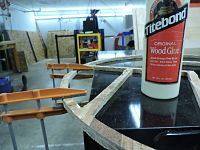

Week FIVE.
Computer Controllled Machining
Main Page
Personal Tension of the Week: Function v Design
Function
And so, my automatic thought as with make something useful. Something that I would use. And so I thought, a standing desk attachment. So, I found a model that I was vaguely interested, opened up Fusion360 and began to create. And in doing so, I realized how chunky this thing would be and how unappealing the actual concept would be in my room.
So instead of considering how to redesign it's elements and make both it's aesthetics and functionality fit into my lifestyle/homespace, I decided to instead abandon the idea altogether.
Design
And thus, I began to approach this in terms of aesthetics veruss functionality. While in this week I had several goals, designing my own original piece of furniture was not a main one, so I thus aimed to work within Rhino (sorry, no Grasshopper :(. I found this pretty simple image from UrbanOutfitter's website, and thought it was perhaps minimalistic--with a frame of metal, that is what my final iteration would become. Of course. And of course, time limitations did not permit that to happen.
So, following my work with Rhino and many measurements and calculations, I was able to export the file as a .dxf, ceate my vector toolpath based on a 1/8" bit, 14000 rpm, ~.46" thickness of a board, upload to the Shopbot and begin cutting. Of course, this entire process entailed fixturing my 4x4' board to the sacrificial layer, zeroing the XYZ axes and doing an air pass before the actual cut.
Some Overlookings
One thing I realized rather late is that the thickness of my board varied a lot more than I anticipated. So in multpiple places, I had to carve through the final layer of OSB, thus leaving a lot of hairs and ultimately doing a great deal of sanding. Additionally, in the process, one of my rings (as you can see they are rather thin and delicate) snapped! Nothing a little wood glue couldn't fix, though.
One other piece that I overlooked was the notches on one of my shelves. Perhaps it was the mental mapping of what this was going to look like--my process only involved drawings, mental visualitions and flat recreations in Rhino. I did not try to make these pieces 3D and fit them together (this is something I have only done with Fusion.) Nonetheless, I didn't account for the curvature at this particular point of the circle. Ultimately a TA helped me saw off the side rather evenly and smoothly and with a little sanding, this this wasn't a big problem in the end.